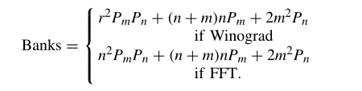

【FPGA】论文调研——Evaluating Fast Algorithm for CNNs and FPGAs
摘要
近年来，卷积神经网络(CNN)已被广泛应用于计算机视觉领域。FPGA由于其高性能和可重构性，已被充分开发为较有前途的CNN硬件加速器。然而，先前基于传统卷积算法的FPGA实现方案往往受到FPGA计算能力的限制，例如DSP的数量。
首先，为了解决这一问题，本文研究的论文《Evaluating Fast Algorithm for Convolutional Neural Networks on FPGAs》采用快速算法将特征映射转换为特定域，降低了算法复杂度，减少了DSP的使用数量，提升了FPGA的资源利用率。Winograd和快速傅里叶变换(FFT)作为快速算法的代表，首先将输入数据转换并滤波，然后逐元乘法，再进行逆变换得到最终输出。
其次，调研的论文中还提出了一种在FPGA上实现快速算法的新架构。该设计采用了行缓冲结构，可以有效地重用不同块之间的特征图数据。该论文还有效地对Winograd/FFT处理元素(PE)单元进行流水线化，并通过并行化启动多个PE。
最后，论文提出了一个分析模型来预测资源的使用和性能，并使用了最先进的CNN实验测出了FPGA的最佳性能和能源效率。在Xilinx ZCU102平台上，使用Winograd实现了AlexNet和VGG16的854.6 GOP/s和2479.6 GOP/s。在Xilinx ZC706平台上，使用Winograd实现了Resnet的130.4 GOP/s，使用FFT实现了YOLO的2011 GOP/s。
关键词：CNN、FPGA、快速算法、新架构、行缓冲、PE、流水化、并行化、分析模型
目录
4.3.1 循环分块(Loop Tiling)的概念介绍 13
5.3.1 利用循环展开(Loop Unrolling)实现PE的并行化 15
5.3.2 本地内存优化(Local Memory Promotion) 16
1. 前言
深度卷积神经网络(CNN)在图像分类、目标检测、语义分割等各种计算机视觉任务中都取得了显著的性能。CNN性能的改进是以巨大的计算复杂度为代价的，因为它需要对特征图中的所有区域进行全面评估和计算。面对如此巨大的计算压力，硬件加速器，如GPU (graphics processing unit)、FPGA (field-programmable gate arrays)、ASIC (application specific integrated circuit)等已被应用于对CNN进行加速。在加速器中，FPGA因其高性能、和可重构性而成为一种较好的解决方案。更重要的是，使用C或C++的高层次综合(HLS)大大降低了FPGA的编程障碍，提高了效率。
CNN通常涉及多层，其中一层的输出特征图是下一层的输入特征图。先前的研究表明，最先进的CNN的计算是由卷积层主导的。如果使用空间卷积算法，输出特征图中的每个元素将通过使用多次乘累加(MAC)操作单独计算。而此前使用该算法的CNN FPGA解决方案已经初步成功。在所调研的论文《Evaluating Fast Algorithm for Convolutional Neural Networks on FPGAs》中显示了FPGA加速器加速CNN的资源利用情况，如表一所示。在这些设计中，可以得出结论，DSP是消耗最多的资源，因为典型CNN的操作主要由MAC单元组成，乘法器通常由DSP在FPGA上实现。
表1 先前FPGA加速CNN的资源使用情况:

除了空间卷积算法外，一些设计选择将卷积变为通用矩阵乘法(GEMM)。然而，这种方法只是减少了访问内存的次数，并没有减少乘法的数量。基于减少乘法次数可以提高DSP效率的做法，快速算法被广泛应用于降低卷积运算的算术复杂度。实践证明，Winograd快速算法和经典的FFT算法可以显著降低算法复杂度。在应用FFT和Winograd算法时，将输入特征映射和滤波器转换到相应的域，然后执行元素矩阵乘法(element-wise matrix-乘法，EWMM)。约简程度取决于快速算法的参数。例如，使用6 × 6输入块的Winograd算法可以为3 × 3滤波器带来4倍的乘法缩减，使用8 × 8输入块的FFT算法可以为3 × 3滤波器带来3.45倍的乘法缩减。
更重要的是，目前CNN的趋势是使用更小的滤波器。例如论文中提到的VGG16和YOLO只使用3×3滤波器，而3×3和5×5过滤器广泛应用于Resnet和Googlenet。并且已经证明了快速Winograd算法和FFT可以用来实现具有较小滤波器的CNN。这为使用快速算法高效实现CNN提供了机会。然而，在FPGA上使用快速算法很有吸引力，但仍然存在几个问题。首先，设计不仅要最小化内存带宽需求，而且要使内存吞吐量与计算匹配，这是至关重要的。其次，将快速算法映射到FPGA上存在较大的设计空间。很难推断出哪些设计将提高或损害性能。
本文所调研的论文《Evaluating Fast Algorithm for Convolutional Neural Networks on FPGAs》做出了以下贡献：
- 提出了在FPGA上使用Winograd和FFT算法高效实现CNN的框架。
- 提出了采用行缓冲结构、高效的全流水线PE和并行化PE的架构。
- 开发分析资源和性能的模型，并利用这些模型探索设计空间，以确定最优参数。该模型集成了自动工具链，可以自动生成快速算法的实现。
论文中也通过实验得到了一些令人信服的结果：使用了最先进的CNN的实验测得了fpga上CNN的最佳性能和能源效率。论文中的团队在ZCU102平台上实现了卷积层的平均1006.4 GOP/s和2601.3 GOP/s，整体AlexNet和VGG的平均854.6 GOP/s和2479.6 GOP/s。 AlexNet的能源效率为36.2 GOP/s/W, VGG16的能源效率为105.4 GOP/s/W。在ZC706平台上，卷积层的平均GOP/s分别为163.1 GOP/s和2011 GOP/s，整体Resnet和YOLO的平均GOP/s分别为130.4和2011 GOP/s。Resnet的能源效率为13.8 GOP/s/W，YOLO的能源效率为21.4 GOP/s/W。

深度学习的整体过程如图1所示，首先需要初始化一些参数，通过摄取外部的相关信息进行前向传播计算，之后会计算损失函数，并通过反向传播来修正优化参数，已达到更为准确的预测。CNN是深度学习中的一类前馈人工神经网络，用于前向传播的过程。一般来说，CNN由一系列层组成，每一层又由输入特征图、过滤器和输出特征图组成。可以使用在训练过程中学习到特征的滤波器从输入图像中提取某些特征，如图2所示。在典型CNN的所有层中，卷积层占了主要的计算量。
图2：CNN每一层的计算过程:

CNN中的空间卷积算法由多个for循环组成，如下式所示:

将相应的输入特征数据与滤波器进行相乘和累加，分别计算输出特征图中的每个元素。通过平面化输入特征映射和重新排列滤波器，空间卷积可以映射到GEMM (General Matrix Multiplication）。这种方法会增加对局部内存的要求，因为输入特征图中的像素在循环展开过程中会被复制多次。GEMM因其对不同层类型的通用性而被广泛应用于GPU实现中。然而，GEMM在CNN的实现中没有贡献算术简化，但GEMM的优化可以减少内存访问次数，提高速度。
-
适用于CNNs的快速算法
除了空间算法和GEMM外，Winograd和FFT等快速算法也被应用于卷积的加速。与空间卷积算法不同的是，该算法利用输入特征图中同一块元素之间的结构相似性，可以生成一个输出特征图块。更清楚地说，给定大小为n × n的输入块和r × r滤波器，论文使用快速算法生成大小为m × m (n = m + r−1)的输出特征图。因此，基于这些快速算法的卷积可以用一个通用公式来描述：

从公式中可以看出快速卷积算法主要有三个步骤：
-
输入和滤波器的转换: 首先，将输入块和过滤器转换为相同的形状。Winograd卷积和FFT卷积使用不同的变换函数，后面会介绍。
-
元素相乘(EWMM): 其次，在两种算法中，对得到的中间矩阵进行EWMM。微小的区别在于FFT卷积使用复杂的数据，因此需要更多的计算资源。
-
逆变换: 最后，将EWMM结果变换为原始卷积结果。逆变换函数也根据第一阶段使用的函数的不同而不同。

可以发现，Winograd算法将矩阵z和矩阵x的计算转变成了计算m1,m2,m3和m4，这四项的表达式如上式所示。其实矩阵x可以看作CNN当中的输入特征图的一部分数据，x矩阵可以看作做滤波器也就是卷积核，而与x有关的矩阵是确定的一些参数，可以预先计算好，因此计算m1,m2,m3和m4只需要四次乘法。减少乘法的次数可以减少DSP的使用数量，对提升FPGA的性能有较大的帮助，因此被称作为快速算法。
图3：实际二维卷积中的Winograd算法:

在实际的CNN二维卷积操作过程中，首先将需要卷积的每一个特征图块展开到k矩阵的一行，如图3所示，将滤波器中的参数展开到w矩阵的一列，然后进行矩阵相乘。使用Winograd算法的过程可以由下式统一给出：


在上式中，FFT是由小尺度离散傅里叶变换按照划分而来，也称为蝶形计算。值得注意的是，Cooley-Turkey算法仅在FFT大小为2的幂时有效。图4给出了FFT size = 4的FFT算法简例。在本例中，完成FFT需要两个阶段。在这些阶段中，用两点(基数-2 FFT)进行了若干次蝶形计算。
图4：基于蝶形运算的FFT算法：

FFT计算大小为2的幂，并且计算结果可能有复数。所以最后需要crop操作对数据进行修正，符合输出的是实数，并且位宽一致，如下式所示。

表2：卷积算法的比较

Winograd算法和FFT算法虽然流程有相似之处，但是依然有所不同。、
- 乘法节省：
在快速算法中，只有阶段2的元素相乘需要使用到乘法。对于Winograd算法，乘法的次数是n^2。例如，用3 × 3滤波器卷积6 × 6输入块生成的4 × 4输出块，空间卷积需要42 × 32 = 144次乘法，而Winograd算法只需要6 × 6 = 36次乘法。然而，FFT算法涉及复数。一般来说，一个复杂的乘法需要四次实乘法，如下式所示。

此外，在深度学习场景中，输入通常为实值，这使得FFT变换后的矩阵具有Hermitian对称性。Hermitian Matrix指的是自共轭矩阵。矩阵中每一个第i行第j列的元素都与第j行第i列的元素的共轭相等。矩阵主对角线上的元素都是实数的，其特征值也是实数，如图4所示。
图5：Hermitian Matrix的共轭对称性：

在图5的例子中，可以观察到X(0)和X(2)，以及X(1)和X(3)表现出Hermitian对称。
表3：两种快速算法在节省乘法运算方面的比较：

从图中可以看出，在相同的输入条件下，例如n=8,r=3,m=6的条件下，Winograd比FFT节省的乘法次数更多。原因在于，FFT考虑了复数运算，运算出的矩阵呈现Hermitian对称，所以相当于一半的矩阵数据都是没用的，多用了一些乘法操作。
- 常数范围:
转换阶段的常数乘法可以用移位操作代替，移位操作可以在FPGA上使用查找表(LUT)实现。因此，常数的范围决定了精度要求。换句话说，常数越大或越小，需要的LUT就越多。论文比较了Winograd算法和FFT算法中的常数。在Winograd，常数是由多项式插值确定的。在FFT中，常数为旋转因子。在表3中，论文中列出了一些常用的块大小的常数，从中可以看出，在相同的输入块大小下，Winograd算法有更高的精度要求。
-
重叠相加法(Overlap -and- Add, OaA):
- 在这种方法中，输入被分割成几个没有重叠的块。然后，输出块进行重叠，并叠加在一起以得到最终结果，如图6(a)所示。
-
重叠保留法(Overlap-and-Save, OaS):
-
如图6(b)所示，在该方法中，来自重叠输入块的输出块进行拼接直接得到结果，不需要进行重叠。
图6：重叠相加法和重叠保留法：
-

虽然这两种方法具有相同的算法复杂度，但在FPGA实现中，OaA方法会导致严重的内存冲突。如图6(a)所示，重叠部分共享相同的地址，当任务完全流水线时，MAC(乘累加)操作需要块随机存储器(BRAM)中至少两个端口。因此，论文中选择OaS方法作为数据流来解决数据依赖问题。
结合OaS方法，论文中将快速算法应用于输出块的生成。快速卷积算法的伪代码如图7所示。
图7：快速卷积法的伪代码：

-
主要架构设计
基于OaS，论文提出了一种基于Winograd和FFT卷积的CNN FPGA加速器设计。然而，也存在一些挑战。首先，卷积层具有较高的内存带宽要求。论文观察到相邻的块在水平和垂直上共享输入特征图数据。论文利用这一观察来设计行缓冲区，以最大化数据重用。其次，与空间卷积算法不同，快速算法一次生成一个输出特征图的块。这要求在转换开始之前，输入块和过滤器中的所有元素同时就绪。论文为Winograd算法和FFT算法设计了一个高效的PE单元，然后通过并行化多个PE来实现卷积的计算。第三，论文提出了一个性能预测的分析模型，并利用它来有效地进行探索。
-
架构整体概览
图8：整体架构概览：

图8给出了FPGA上基于快速算法的卷积层架构概述。论文中采用行缓冲区来实现数据重用。图8中有多通道的输入特征映射(M) ，PE (Winograd PE或FFT PE)获取来自行缓冲区的数据。具体来说，给定一个n×n的输入块，PE将生成一个m×m的输出块。论文通过并行化多个通道来进行计算。最后论文使用双缓冲区来重叠数据传输和计算。所有输入数据(例如，输入特征映射和过滤器)最初存储在外部存储器中。输入和输出特征映射通过先输入先输出(FIFO)传输到FPGA。然而，随着卷积网络的深入，过滤器的大小显著增加。将所有滤波器加载到片上存储器中是不现实的。在论文的设计中，将输入和输出通道分成几组。每个组只包含过滤器的一部分，在需要时逐组加载过滤器。
-
行缓冲区的设计
如图8所示，输入的行缓冲区采用双缓冲区的设计，实现n行的卷积计算和m行的数据传输。论文将上方用于m行数据传输的缓冲区记作A缓冲区，将下方实现n行卷积计算的缓冲区记作B缓冲区。由于论文中使用的是重叠保留法计算卷积，因此在每一次的输入块（图7中的Input Tile）进行运算的时候，前一个输入块和这一轮的输入块应该有一部数据是重叠的，也就是数据重用的部分，如果这些数据在每一轮卷积中都从内从中读取出来然后再放进内存，那么对内存的访问次数将会很多，降低运算的速度。
图8输入缓冲区中下方B缓冲区的数据移动模式可以确保重叠部分的数据在缓冲区多待一轮，不会重复的从内存中取出放回，提高了运算速度。首先一开始，PE直接读取下方B缓冲区的n行数据进行运算，之后由于n行中的下面2行属于重叠部分，在第二次运算过程中还会用到，所以将最下面2行的数据移动到B缓冲区的最上面两行，n行下面的m行被A缓冲区新来的数据覆盖。实现了重叠保留法的具体操作，同时减少了内存的访问次数。
 ****
****论文知道，对于循环访问数组如而言，如图9所示，无论是 CPU 还是 GPU在每次访问 A[i] 的时候，并不是只从 memory 取一个 float，而是以 Cache Line（约 64Byte）为单位去访问的。这样的话，当访问 A[0] 时，其实从 A[0] 到 A[15] 都已经在同一个 CacheLine 里，所以 i=1 到 i=15 时的访存速度会更快。
但问题在于 Cache 的总容量是有限制的（如 现代 CPU 的 L1 Data Cache 约 32KB 大小），当 Cache 满了之后，如果还需要获取新的 Cache Line，就得把旧的 Cache Line 给退还到 memory 中。
所以，上述例子中，如果 N 非常大，那么当你访问到 N-1 的时候，A[0-15] 所在的 Cache Line 已经被退还到memory中了。这时如果再回头访问 A[0]，就得重新把这个 Cache Line 从 memory 中取出，速度比较慢。如同上面的这个双层循环的例子，如果 M 很大，那么每次 i 加一 时，就得重新从 memory 访问，访存速度就会很慢。 因此，论文引入循环分块技术Loop Tiling 去解决上述问题。
Loop Tiling 的目的是确保一个 Cache Line 在被用过以后，后面再用的时候其仍然在 cache 中，没有被退还。实现思路是：当一个数组总的数据量无法适合缓存的大小时，把总数据分成一个个块去访问，令每个块都可以适合内存的大小。
图10：利用循环分块的访问数组代码：

具体做法如图9所示。把一层内层循环分成 outer loop * inner loop。然后把 outer loop 移到更外层去，从而确保 inner loop 一定能适合缓存的大小。当论文把内层循环给变成更小的 inner loop，那么整个待访问数组适合缓存的大小，外层开始循环时就不会出现 cache miss 了。
 ****
****论文中将计算卷积的最内层的两层循环利用循环分块技术进行处理，其中将输入特征图按Pm进行分块，输出特征图按Pn进行分块，进行实际的卷积运算，如图11所示。
-
PE单元设计
图12：PE单元的整体设计：

-
基于Winograd算法的PE设计
在Winograd PE设计中，论文选择了在线的转换过滤器。这样不仅节省了片上的BRAM资源，而且由于输入和滤波器的转换可以并行进行，不会造成额外的延迟。观察到变换矩阵(B, G，A)只要输入块大小和滤波器大小给定就可以确定，**论文变将换阶段的乘法替换为常数乘法，这些常数乘法是使用移位操作计算的。使用LUT阵列可以很容易地实现移位操作，因此可以降低DSP的利用率。**阶段2中的乘法是并行执行的，因此论文将中间数据矩阵存储在寄存器中，以提高内存带宽，因为它减轻了内存冲突。
-
基于FFT算法的PE设计
传统的FFT实现主要关注的是较大数据量的计算，其中可能包含数千个信号。在这些情况下，由于资源限制，FFT计算不能完全并行。而在CNN的计算中，过滤器的大小相对较小，特征图的大小也会随着CNN网络的深入而减小。因此，应用小尺度FFT算法是合理的。论文将PE专门用于实现FFT的卷积。在变换阶段，为了执行2-D-FFT，论文首先对输入块的每一行进行1-D-FFT，然后对中间矩阵进行转置，为下一行的1-D-FFT做准备，然后再进行一次换位，得到正确的FFT结果。请注意，阶段1和3中的乘法也是常数乘法，因此不需要任何DSP。此外，论文利用输入和滤波器的矩阵共轭对称来减少乘法次数和内存需求，如图12所示。与Winograd PE类似，中间矩阵存储在寄存器中，常数乘法被移位操作取代。
-
PE并行化与本地内存优化


图13左侧是一个简单的循环代码，可以发现变量i需要循环100次来完成累加操作，通过循环展开实现的代码如图右边所示。可以发现，此时循环块中的累加需要同时执行两次，而变量i只需循环50次。对于硬件电路而言，就是一种增加电路面积而减少运行时间的做法，而这对于FPGA是有利的，因为可以提升FPGA中LUT的资源利用率，同时减少运算时间。
如图所示，论文通过实现内层循环的展开来实现PE的并行化。在并行计算中，交换循环的顺序，如图所示，以避免数据重复。值得注意的是，Pm×Pn的PEs只需要输入转换Pm次，因此论文将Pm设置为计算中的最外循环。类似地，逆变换只需要执行Pn次。所以论文中不立即进行逆变换。EWMM操作的结果在所有输入通道上累积，然后将累积的结果转换到空间域。
-
本地内存优化(Local Memory Promotion)
如果通信部分的最内层循环，例如图12中的循环维度ti与数组无关，则不同循环迭代之间将存在冗余内存操作。本地内存提升可以减少冗余操作。在图14中，最内层的循环维度ti与数组输出fm无关。因此，对数组输出fm的访问可以提升到外部循环。注意，提升过程可以迭代执行，直到围绕访问的最内层循环最终相关为止。通过局部内存提升，可以减少内存访问速度，提升速度。
图14：本地内存优化：


图15是论文对使用DSP数量的建模，可以发现Winograd算法相比于FFT算法使用的DSP要更少，这与之前的结论是吻合的，因为FFT还要考虑复数的相乘，一次复数相乘需要四次实数乘法，同时输出结果矩阵具有共轭对称特性，浪费了一半运算数据。
图16：使用LUT数量的计算建模：

图17：使用存储区域个数的计算建模：

此外，论文还对使用的LUT和存储区域个数进行了计算建模，如图16和图17所示。其中的参数都可以由计算得出。

其中，Freq为FPGA的工作频率。II表示流水线的迭代间隔。在论文的实现中，循环是完全流水线化的，因此II = 1。Pdepth为管道深度，当循环次数足够大时可以忽略。
另一方面，对应的输入输出数据的传输时间为:

由于要求Ttransfer≤Tcompute，所以带宽需求可以表述为:

此外，论文还考虑了Tinit，将输入图像的前n行加载到片上内存并进行滤波的时间：

卷积的总运算处理时间是：

总的操作次数是：

因此，基于快速算法的卷积的有效性能计算如下：


论文提出了一种将CNN模型映射到FPGA实现的自动工具链。OaS方法同时适用于Winograd算法和FFT算法，激发了统一的数据位置感知体系结构设计。显然，Winograd PE和FFT PE都从行缓冲区中获取数据，并逐块生成输出。因此，将一种算法转换为另一种算法只需要重新配置PE，而不需要对架构进行任何其他更改。为了优化设计，论文中用设计的参数来制定性能和资源利用率，然后依靠这个模型来指导设计空间探索。通过给定的快速算法(Winograd或FFT)，自动工具可以自动将CNN映射到FPGA上，如图18所示。流程由四个步骤组成。在第一步中，将CNN体系结构和FPGA配置输入到设计空间探索引擎(DSEE)中，以获得最优解。在第二步中，基于最优解，开发了自动生成快速卷积函数的代码生成引擎(CGE)。在第3步中，使用Xilinx HLS工具将代码合成为RTL级别。最后，使用Xilinx SDSoC(软件定义的片上系统)工具链来生成比特流。
-
实验评估测试
-
Winograd算法的性能分析
论文将评估分析模型，并使用单个卷积层分析Winograd算法的资源使用情况。论文使用典型的输入特征图尺寸:224(H) × 224(W)， {M = N = Tn = Tm = 64}，并尝试两种不同的滤波器尺寸:3 × 3和5 × 5。图17比较了不同输入块大小和并行度下的预测性能和实际性能，并给出了相应的资源利用率。实验在Xilinx ZC706上进行。可以看到论文中的性能预测模型是非常准确的。滤波器3 × 3和5 × 5的平均预测误差分别为15.4%和13.7%。不准确的来源可能是实际带宽和峰值带宽以及DDR访问延迟的差异。
图19：Winograd算法的性能分析：

**通过Winograd算法，DSP不再是大多数情况下的限制资源，如图19所示。相反，Bram和内存带宽可能是限制资源的主要因素。**BRAMs的消耗来自几个方面。首先，与空间卷积不同，Winograd卷积需要更多的缓冲区，因为行缓冲区结构。其次，并行Winograd PEs需要内存分区来维持片上内存带宽。最后，当计算效率提高时，片外带宽可能会成为瓶颈。总体而言，Winograd算法节省了DSP，提高了整体资源利用率。
-
FFT算法的性能分析
FFT模型的实验结果如图20所示。如前所述，在FFT算法中，FFT大小等于输入块的大小，滤波器被填充到与输入块相同的大小。论文只在单个卷积层中计算两种大小(n = 4和n = 8)的FFT。因为当FFT大小大于8时，片上内存不足以存储论文框架中的所有缓冲区。平均而言，论文的性能模型的预测误差为10.1%。
图20：FFT算法的性能分析：

从图20中可以看出，由于计算效率的提高，DSP成为了丰富的资源。与基于Winograd的实现相比，基于FFT的实现需要更多的Bram，因为过滤器是离线转换的复数。此外，FFT算法消耗更多的逻辑资源(LUT)。准确地说，与Winograd算法相比，FFT算法中有更多的加法和常数乘法，因为包含复数。注意，2-D-FFT变换需要比1-D-FFT变换多2n倍的操作。然而，在Winograd中，输入块的变换只需要两次常数矩阵乘法。
-
资源的评估验证
在以往应用空间算法的FPGA实现中，性能通常受到DSP数量的限制。然而，当应用快速算法时，可能导致DSP利用率较低，应考虑其他资源的使用情况，如LUT和BRAM。论文对资源模型进行评估。表4列出了来自Xilinx Vivado HLS工具的参数，以指导论文中的资源勘探。对于FFT算法，滤波器被填充到与输入块相同的大小并离线转换，r = 5的滤波器不需要参数。对于这两种算法，α和β随着n的增加而急剧增加，因为矩阵大小和常数呈指数增长。对于FFT算法，α和β近似相等，因为FFT和IFFT具有相同的算法复杂度。
表4：参数在模型中的评估：

-
具体情况的研究
论文使用AlexNet、VGGNet和Resnet来评估Winograd算法。FFT在VGGNet和YOLO上进行了测试。表4给出了实现中每个网络的参数。对于ZC706平台，论文选择参数Tm = Tn = 64，对于ZCU102平台，论文选择参数Tm = Tn = 128。
-
AlexNet
AlexNet由五个卷积和三个FC层组成。输入图像为224 × 224。除了第一个卷积层(11×11)，所有的卷积层都使用小滤波器(5 × 5和3 × 3)。对于第一层，论文选择使用空间卷积算法来实现。对于其余层，论文使用Winograd算法的统一3 × 3过滤器。对于5×5过滤器，论文使用四个零填充的3×3过滤器来实现它。由于AlexNet的层间多样性，论文将2/3片上资源作为设计空间探索的约束条件。
表5：AlexNet评估

表5给出了结果。与之前的工作相比，论文将平均卷积性能从61.6 GOP/s提高到1006.4 GOP/s。对于整体CNN，论文将性能从72.4 GOP/s提高到854.6 GOP/s。论文的性能低于[43]，这主要有三个原因。
-
AlexNet的不规则结构。第一层的步幅是4，如果使用Winograd，这使第一层效率低下。
-
[43]中的频率要高得多。
-
Arria 10中的DSP可以实现为两个FP16乘法器。

VGG16由5个输入大小不同的卷积组(224、112、56、28、14)组成。在VGG16中，所有卷积层都是3 × 3滤波器，很适合Winograd算法。因此，论文将95%的片上资源作为设计空间探索的约束条件。表6将论文的技术与之前的工作进行了比较。对于卷积层，论文将平均性能从1283 GOP/s提高到2601.4 GOP/s。对于整体CNN，论文将性能从866 GOP/s提高到2479.6 GOP/s。由于Intel FPGA和Xilinx FPGA的DSP配置不同。为了在不同平台之间进行公平的比较，论文还展示了每个平台的总资源效率和能源效率。可以观察到，论文的实现了更好的资源效率，这来自算术复杂度的降低和新架构的实现。
注意到VGG16的性能比AlexNet高。这是因为VGG16使用了统一的卷积结构，而AlexNet使用了两种不同的卷积结构。论文还发现卷积层的性能随着网络的深入而降低。这是因为初始时间(Tinit)占总时间(Ttotal)较多，初始时间只涉及数据传输，没有实际计算。在ZC706平台上应用FFT快速算法对VGGNet进行加速，并与同样应用FFT算法的其他工作进行比较，性能从123.5 GOP/s提高到277.8 GOP/s，能效从9.3提高到29.4。
-
YOLO
You only look once (YOLO)是一种最先进的网络实时目标检测系统。论文使用Tiny-YOLO版本来评估论文的设计。Tiny-YOLO包含9个卷积层和6个最大池化层。所有卷积层都使用3 × 3滤波器。论文应用FFT算法对YOLO网络进行加速，结果如表7所示，各层详细性能如图21所示。论文注意到前几个层的性能有所提高。这是因为前几层的通道数量相对较少，这意味着更少的数据重用机会，因此这些层的性能受到片外带宽的限制。
图21：YOLO各层的详细性能：

表7：YOLO和Resnet的评估

-
Resnet
Resnet是一种用于图像识别的现代网络，由许多残差块组成。残差块由两个1 × 1卷积层和一个3 × 3卷积层组成。设(2/3)片上资源为快速算法的约束条件。采用Winograd算法对3 × 3卷积层进行加速，采用空间卷积算法对1 × 1卷积层进行加速。表7给出了结果。卷积层的性能为163.1 GOP/s，整个网络的性能为130.4 GOP/s。论文的性能不如其他的工作，这主要来自两个方面：
- 在Intel Altera平台上，单个DSP可以实现为两个16×16定点乘法器。
- 部分片上资源用于1 × 1滤波器，这些滤波器占剩余块中40%的计算量。
-
与GPU的比较
论文对GPU和FPGA平台进行比较。对于GPU，论文在NVIDIA TitanX平台上使用Caffe框架来测量VGG16的性能。为了做一个公平的比较，论文用最新的cuDNN[47]测试了TitanX的性能，因为Winograd和FFT算法也包含在cuDNN中，GPU上的Power是使用NVIDIA剖析工具获得的。表8显示了比较结果。在cuDNN中，Winograd算法优于FFT算法，因为FFT算法需要大量的内存空间来存储中间结果，比Winograd需要更多的时间。TitanX提供了更好的性能，但论文在Xilinx ZCU102 FPGA上的实现实现了更好的能源效率(2.5倍)。
表8：与GPU的比较

9. 总结
本次调研了论文《Evaluating Fast Algorithm for Convolutional Neural Networks on FPGAs》。FPGA已被广泛用于加速基于CNN的应用。然而，以往基于空间算法的实现主要受到FPGA计算能力的限制。在论文中，提出了一种基于快速算法的FPGA框架，该框架可以有效减少卷积层的乘法次数。针对Winograd算法和FFT算法设计了一个高效的PE引擎。为了指导快速的设计空间探索，论文还开发了分析模型来估计资源的使用和性能。在ZCU102 FPGA平台上实现的峰值性能达到2479.6 GOP/s，优于以往的所有工作。通过本次调研论文，我掌握了深度学习和卷积神经网络的计算过程，了解了不同的优化策略和新型架构，为之后的深入学习奠定了基础。
参考文献
[1] C. Zhang et al, “Energy-efficient CNN implementation on a deeply pipelined FPGA cluster,” in Proc. Int. Symp. Low Power Electron.
[2] N. Suda et al, “Throughput-optimized OpenCL-based FPGA accelerator for large-scale convolutional neural networks,” in Proc. ACM/SIGDA Int.
[3] J. Qiu et al, “Going deeper with embedded FPGA platform for convolutional neural network,” in Proc. ACM/SIGDA Int. Symp. Field Program.
[4] Y . Ma, N. Suda, Y . Cao, J. S. Seo, and S. Vrudhula, “Scalable and modularized RTL compilation of convolutional neural networks onto FPGA,” in Proc. Int. Conf. Field Program.
[5] H. Li et al, “A high performance FPGA-based accelerator for largescale convolutional neural networks,” in Proc. Int. Conf. Field Program.
[6] Y . Ma, Y . Cao, S. Vrudhula, and J.-S. Seo, “Optimizing loop operation and dataflow in FPGA acceleration of deep convolutional neural networks,” in Proc. ACM/SIGDA Int.
[7] J. Zhang and J. Li, “Improving the performance of OpenCL-based FPGA accelerator for convolutional neural network,” in Proc. ACM/SIGDA Int.
[8] K. He, X. Zhang, S. Ren, and J. Sun, “Delving deep into rectifiers: Surpassing human-level performance on ImageNet classification,” in Proc. IEEE Int. Conf. Comput. Vis., 2015, pp. 1026–1034.
[9] R. Girshick, J. Donahue, T. Darrell, and J. Malik, “Rich feature hierarchies for accurate object detection and semantic segmentation,” in Proc.
IEEE Conf. Comput. Vis. Pattern Recognit., 2014, pp. 580–587.
[10] A. Krizhevsky, I. Sutskever, and G. E. Hinton, “ImageNet classification with deep convolutional neural networks,” in Proc. Adv. Neural Inf.
[11] K. He, X. Zhang, S. Ren, and J. Sun, “Deep residual learning for image recognition,” in Proc. IEEE Conf. Comput. Vis. Pattern Recognit., 2016, pp. 770–778.
[12] C. Szegedy et al, “Going deeper with convolutions,” in Proc. IEEE Conf. Comput. Vis. Pattern Recognit., 2015, pp. 1–9.
[13] C. Zhang et al, “Optimizing FPGA-based accelerator design for deep convolutional neural networks,” in Proc. ACM/SIGDA Int. Symp. Field Program. Gate Arrays, 2015, pp. 161–170.
[14] X. Zhang, J. Zou, X. Ming, K. He, and J. Sun, “Efficient and accurate approximations of nonlinear convolutional networks,” in Proc. IEEE Conf. Comput. Vis. Pattern Recognit., 2015, pp. 1984–1992.
[15] Y .-H. Chen, J. Emer, and V . Sze, “Eyeriss: A spatial architecture for energy-efficient dataflow for convolutional neural networks,” in Proc.
 Wechat
Wechat